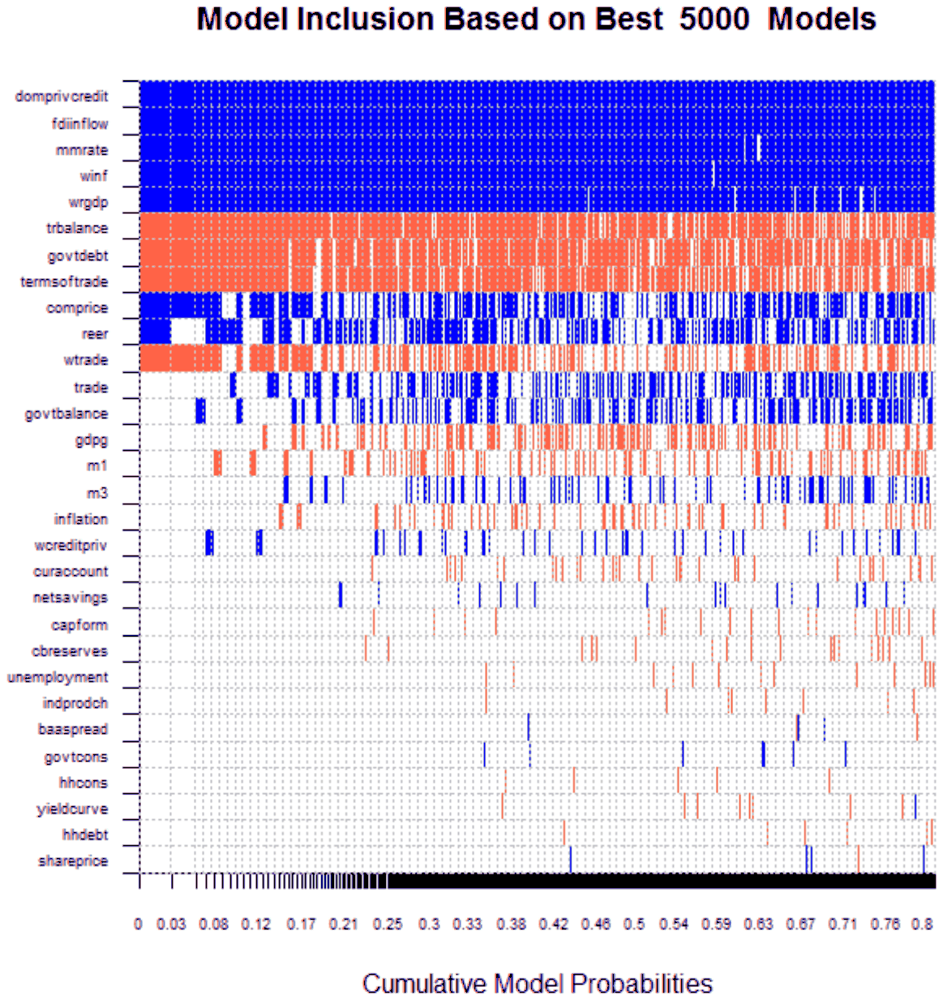

Abstract
We construct and explore a new quarterly dataset covering crisis episodes in 40 developed countries over 1970–2010. First, we examine stylized facts of banking, debt, and currency crises. Banking turmoil was most frequent in developed economies. Using panel vector autoregression, we confirm that currency and debt crises are typically preceded by banking crises, but not vice versa. Banking crises are also the most costly in terms of the overall output loss, and output takes about six years to recover. Second, we try to identify early warning indicators of crises specific to developed economies, accounting for model uncertainty by means of Bayesian model averaging. Our results suggest that onsets of banking and currency crises tend to be preceded by booms in economic activity. In particular, we find that growth of domestic private credit, increasing FDI inflows, rising money market rates as well as increasing world GDP and inflation were common leading indicators of banking crises. Currency crisis onsets were typically preceded by rising money market rates, but also by worsening government balances and falling central bank reserves. Early warning indicators of debt crisis are difficult to uncover due to the low occurrence of such episodes in our dataset. Finally, employing a signaling approach we show that using a composite early warning index increases the usefulness of the model when compared to using the best single indicator (domestic private credit).

Reference: Jan Babecky, Tomas Havranek, Jakub Mateju, Marek Rusnak, Katerina Smidkova, Borek Vasicek (2014), "Banking, debt, and currency crises in developed countries: Stylized facts and early warning indicators." Journal of Financial Stability 15: 1-17.
How to cite
Jan Babecky, Tomas Havranek, Jakub Mateju, Marek Rusnak, Katerina Smidkova, Borek Vasicek (2014), "Banking, debt, and currency crises in developed countries: Stylized facts and early warning indicators." Journal of Financial Stability 15: 1-17.
BibTeX
@article{babecky2014crisis,
author = {Jan Babecky and Tomas Havranek and Jakub Mateju and Marek Rusnak and Katerina Smidkova and Borek Vasicek},
title = {Banking, debt, and currency crises in developed countries: Stylized facts and early warning indicators},
journal = {Journal of Financial Stability},
year = {2014},
doi = {10.1016/j.jfs.2014.07.001},
}
Published version
The text on this site is the working paper. The research was published as “Banking, debt, and currency crises in developed countries: Stylized facts and early warning indicators”, Journal of Financial Stability 2014, which is also republished here in full. DOI.